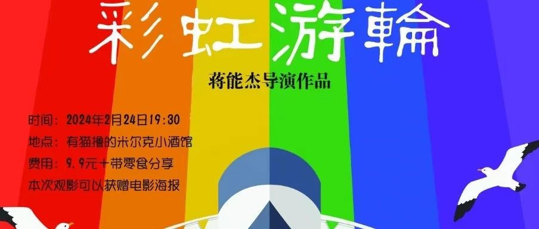

快上船！同志纪录片《彩虹邮轮》放映
“彩虹下的飞鸟乘着微风去远方觅食；就像邮局里的信件寄托着浓浓的情谊；就像大海上的灯塔守候第一缕晨光出现。”
《彩虹邮轮》是一部真实而感人的纪录片，它以独特的视角展现了我国同志群体的生活和故事。通过这部影片，我们将更加深入地了解同志群体，感受他们的喜怒哀乐，以及他们对平等和尊重的渴望。

“同志纪录片《彩虹邮轮》米尔克酒馆线上线下放映”现在就即将“启航”了！同志们快快“上船”吧！
本次放映活动将采用线上+线下的方式进行，为更多人提供观看的机会。无论你身处何地，都能参与其中，与其他观众一起分享这份感动。
线下放映将在米尔克酒馆举行，现场将提供舒适的观影环境，让你身临其境地感受影片的魅力。同时，我们还将邀请嘉宾进行映后交流，分享他们的见解和感受。

线上放映将通过指定平台进行直播，你只需在家中就能轻松观看。线上互动环节同样精彩，你可以与其他观众实时交流，分享你的观影心得。
🌈💋主题:
同志纪录片《彩虹游轮》线上线下放映
🌈💋时间:
2024年2月24日(周六)晚上19:30开始
🌈💋形式:
纪录片观赏(线上+线下)+观众嘉宾观后分享+零食品尝
🌈💋地址:
线上(指定直播平台)
线下(米尔克酒馆)
🌈💋参与对象:
性少数群体或同志友善盟友

这不仅是一场纪录片放映，更是一次关于爱与平等的对话。让我们用包容和理解的心态，共同探索性少数群体的世界，为一个更加平等和包容的社会贡献自己的力量吧！
《彩虹邮轮》期待你的“登船”！🌈
本文编辑:邱嘉彦
策划:布小破